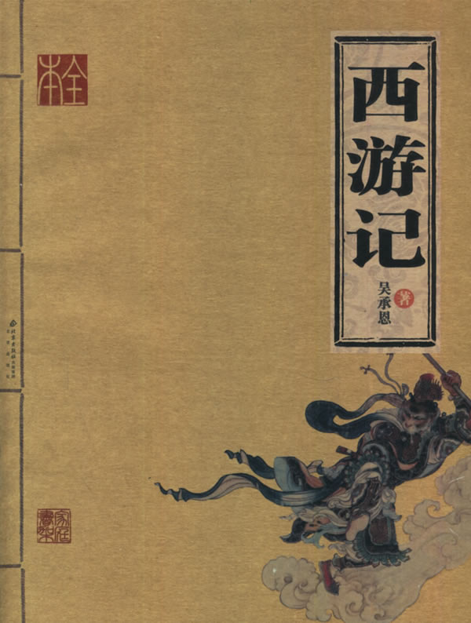

第001回 灵根育孕源流出 心性修持大道#

诗曰
混沌未分天地乱，茫茫渺渺无人见
自从盘古破鸿蒙，开辟从兹清浊辨
覆载群生仰至仁，发明万物皆成善
欲知造化会元功，须看西游释厄传
盖闻天地之数，有十二万九千六百岁为一元。将一元分为十二会，乃子、丑、寅、卯、辰、巳、午、未、申、酉、戌、亥之十二支也。每会该一万八百岁。且就一日而论：子时得阳气，而丑则鸡鸣；寅不通光，而卯则日出；辰时食后，而巳则挨排；日午天中，而未则西蹉；申时晡而日落酉；戌黄昏而人定亥。譬于大数，若到戌会之终，则天地昏蒙而万物否矣。再去五千四百岁，交亥会之初，则当黑暗，而两间人物俱无矣，故曰混沌。又五千四百岁，亥会将终，贞下起元，近子之会，而复逐渐开明。邵康节曰：“冬至子之半，天心无改移。一阳初动处，万物未生时。”到此，天始有根。再五千四百岁，正当子会，轻清上腾，有日，有月，有星，有辰。日、月、星、辰，谓之四象。故曰，天开于子。又经五千四百岁，子会将终，近丑之会，而逐渐坚实。易曰：“大哉乾元！至哉坤元！万物资生，乃顺承天。”至此，地始凝结。再五千四百岁，正当丑会，重浊下凝，有水，有火，有山，有石，有土。水、火、山、石、土谓之五形。故曰，地辟于丑。又经五千四百岁，丑会终而寅会之初，发生万物。历曰：“天气下降，地气上升；天地交合，群物皆生。”至此，天清地爽，阴阳交合。再五千四百岁，正当寅会，生人，生兽，生禽，正谓天地人，三才定位。故曰，人生于寅
感盘古开辟，三皇治世，五帝定伦，世界之间，遂分为四大部洲：曰东胜神洲，曰西牛贺洲，曰南赡部洲，曰北俱芦洲。这部书单表东胜神洲。海外有一国土，名曰傲来国。国近大海，海中有一座山，唤为花果山。此山乃十洲之祖脉，三岛之来龙，自开清浊而立，鸿蒙判后而成。真个好山！有词赋为证。赋曰
势镇汪洋，威宁瑶海。势镇汪洋，潮涌银山鱼入穴；威宁瑶海，波翻雪浪蜃离渊。木火方隅高积上，东海之处耸崇巅。丹崖怪石，削壁奇峰。丹崖上，彩凤双鸣；削壁前，麒麟独卧。峰头时听锦鸡鸣，石窟每观龙出入。林中有寿鹿仙狐，树上有灵禽玄鹤。瑶草奇花不谢，青松翠柏长春。仙桃常结果，修竹每留云。一条涧壑藤萝密，四面原堤草色新。正是百川会处擎天柱，万劫无移大地根。那座山，正当顶上，有一块仙石。其石有三丈六尺五寸高，有二丈四尺围圆。三丈六尺五寸高，按周天三百六十五度；二丈四尺围圆，按政历二十四气。上有九窍八孔，按九宫八卦。四面更无树木遮阴，左右倒有芝兰相衬。盖自开辟以来，每受天真地秀，日精月华，感之既久，遂有灵通之意。内育仙胞，一日迸裂，产一石卵，似圆球样大。因见风，化作一个石猴，五官俱备，四肢皆全。便就学爬学走，拜了四方。目运两道金光，射冲斗府。惊动高天上圣大慈仁者玉皇大天尊玄穹高上帝，驾座金阙云宫灵霄宝店，聚集仙卿，见有金光焰焰，即命千里眼、顺风耳开南天门观看。二将果奉旨出门外，看的真，听的明。须臾回报道：“臣奉旨观听金光之处，乃东胜神洲海东傲来小国之界，有一座花果山，山上有一仙石，石产一卵，见风化一石猴，在那里拜四方，眼运金光，射冲斗府。如今服饵水食，金光将潜息矣。”玉帝垂赐恩慈曰：“下方之物，乃天地精华所生，不足为异。
那猴在山中，却会行走跳跃，食草木，饮涧泉，采山花，觅树果；与狼虫为伴，虎豹为群，獐鹿为友，猕猿为亲；夜宿石崖之下，朝游峰洞之中。真是“山中无甲子，寒尽不知年。”一朝天气炎热，与群猴避暑，都在松阴之下顽耍。你看他一个个
跳树攀枝，采花觅果；抛弹子，-么儿；跑沙窝，砌宝塔；赶蜻蜓，扑八蜡；参老天，拜菩萨；扯葛藤，编草-；捉虱子，咬又掐；理毛衣，剔指甲；挨的挨，擦的擦；推的推，压的压；扯的扯，拉的拉，青松林下任他顽，绿水涧边随洗濯。一群猴子耍了一会，却去那山涧中洗澡。见那股涧水奔流，真个似滚瓜涌溅。古云：“禽有禽言，兽有兽语。”众猴都道：“这股水不知是那里的水。我们今日赶闲无事，顺涧边往上溜头寻看源流，耍子去耶！”喊一声，都拖男挈女，呼弟呼兄，一齐跑来，顺涧爬山，直至源流之处，乃是一股瀑布飞泉。但见那
一派白虹起，千寻雪浪飞；海风吹不断，江月照还依
冷气分青嶂，馀流润翠微；潺-名瀑布，真似挂帘帷
众猴拍手称扬道：“好水！好水！原来此处远通山脚之下，直接大海之波。”又道：“那一个有本事的，钻进去寻个源头出来，不伤身体者，我等即拜他为王。”连呼了三声，忽见丛杂中跳出一名石猴，应声高叫道：“我进去！我进去！”好猴！也是他
今日芳名显，时来大运通；有缘居此地，王遣入仙宫
你看他瞑目蹲身，将身一纵，径跳入瀑布泉中，忽睁睛抬头观看，那里边却无水无波，明明朗朗的一架桥梁。他住了身，定了神，仔细再看，原来是座铁板桥。桥下之水，冲贯于石窍之间，倒挂流出去，遮闭了桥门。却又欠身上桥头，再走再看，却似有人家住处一般，真个好所在。但见那
翠藓堆蓝，白云浮玉，光摇片片烟霞。虚窗静室，滑凳板生花。乳窟龙珠倚挂，萦回满地奇葩。锅灶傍崖存火迹，樽-靠案见肴渣。石座石chuang真可爱，石盆石碗更堪夸。又见那一竿两竿修竹，三点五点梅花
几树青松常带雨，浑然相个人家
看罢多时，跳过桥中间，左右观看，只见正当中有一石碣。碣上有一行楷书大字，镌着“花果山福地，水帘洞洞天。”石猴喜不自胜，急抽身往外便走，复瞑目蹲身，跳出水外，打了两个呵呵道：“大造化！大造化！”众猴把他围住，问道：“里面怎么样？水有多深？”石猴道：“没水！没水！原来是一座铁板桥。桥那边是一座天造地设的家当。”众猴道：“怎见得是个家当？”石猴笑道：“这股水乃是桥下冲贯石桥，倒挂下来遮闭门户的。桥边有花有树，乃是一座石房。房内有石窝、石灶、石碗、石盆、石chuang、石凳。中间一块石碣上，镌着‘花果山福地，水帘洞洞天。’真个是我们安身之处。里面且是宽阔，容得千百口老小。我们都进去住也，省得受老天之气。这里边
刮风有处躲，下雨好存身。霜雪全无惧，雷声永不闻
烟霞常照耀，祥瑞每蒸熏。松竹年年秀，奇花Ri新。
众猴听得，个个欢喜，都道：“你还先走，带我们进去，进去！”石猴却又瞑目蹲身，往里一跳，叫道：“都随我进来！进来！”那些猴有胆大的，都跳进去了；胆小的，一个个伸头缩颈，抓耳挠腮，大声叫喊，缠一会，也都进去了。跳过桥头，一个个抢盆夺碗，占灶争chuang，搬过来，移过去，正是猴性顽劣，再无一个宁时，只搬得力倦神疲方止。石猿端坐上面道：“列位呵，‘人而无信，不知其可。’你们才说有本事进得来，出得去，不伤身体者，就拜他为王。我如今进来又出去，出去又进来，寻了这一个洞天与列位安眠稳睡，各享成家之福，何不拜我为王？”众猴听说，即拱伏无违。一个个序齿排班，朝上礼拜，都称“千岁大王”。自此，石猴高登王位，将“石”字儿隐了，遂称美猴王。有诗为证。诗曰
三阳交泰产群生，仙石胞含日月精
借卵化猴完大道，假他名姓配丹成
内观不识因无相，外合明知作有形
历代人人皆属此，称王称圣任纵横 美猴王领一群猿猴、猕猴、马猴等，分派了君臣佐使，朝游花果山，暮宿水帘洞，合契同情，不入飞鸟之丛，不从走兽之类，独自为王，不胜欢乐。是以
春采百花为饮食，夏寻诸果作生涯
秋收芋栗延时节，冬觅黄精度岁华
美猴王享乐天真，何期有三五百载。一日，与群猴喜宴之间，忽然忧恼，堕下泪来。众猴慌忙罗拜道：“大王何为烦恼？”猴王道：“我虽在欢喜之时，却有一点儿远虑，故此烦恼。”众猴又笑道：“大王好不知足！我等Ri欢会，在仙山福地，古洞神州，不伏麒麟辖，不伏凤凰管，又不伏人间王位所拘束，自由自在，乃无量之福，为何远虑而忧也？”猴王道：“今日虽不归人王法律，不惧禽.兽威服，将来年老血衰，暗中有阎王老子管着，一旦身亡，可不枉生世界之中，不得久住天人之内？”众猴闻此言，一个个掩面悲啼，俱以无常为虑
只见那班部中，忽跳出一个通背猿猴，厉声高叫道：“大王若是这般远虑，真所谓道心开发也！如今五虫之内，惟有三等名色，不伏阎王老子所管。”猴王道：“你知那三等人？”猿猴道：“乃是佛与仙与神圣三者，躲过轮回，不生不灭，与天地山川齐寿。”猴王道：“此三者居于何所？”猿猴道：“他只在阎浮世界之中，古洞仙山之内。”猴王闻之，满心欢喜，道：“我明日就辞汝等下山，云游海角，远涉天涯，务必访此三者，学一个不老长生，常躲过阎君之难。”噫！这句话，顿教跳出轮回网，致使齐天大圣成。众猴鼓掌称扬，都道：“善哉！善哉！我等明日越岭登山，广寻些果品，大设筵宴送大王也。
次日，众猴果去采仙桃，摘异果，刨山药，□【左“属”右“立刀”】黄精，芝兰香蕙，瑶草奇花，般般件件，整整齐齐，摆开石凳石桌，排列仙酒仙肴。但见那
金丸珠弹，红绽黄肥。金丸珠弹腊ying桃，色真甘美；红绽黄肥熟梅子，味果香酸。鲜龙眼，肉甜皮薄；火荔枝，核小囊红。林檎碧实连枝献，枇杷缃苞带叶擎。兔头梨子鸡心枣，消渴除烦更解酲。香桃烂杏，美甘甘似玉液琼浆；脆李杨梅，酸荫荫如脂酸膏酪。红囊黑子熟西瓜，四瓣黄皮大柿子。石榴裂破，丹砂粒现火晶珠；芋栗剖开，JianYing肉团金玛瑙。胡桃银杏可传茶，椰子葡.萄能做酒。榛松榧柰满盘盛，橘蔗柑橙盈案摆。熟煨山药，烂煮黄精，捣碎茯苓并薏苡，石锅微火漫炊羹。人间纵有珍馐味，怎比山猴乐更宁？群猴尊美猴王上坐，各依齿肩排于下边，一个个轮流上前，奉酒，奉花，奉果，痛饮了一日。次日，美猴王早起，教：“小的们，替我折些枯松，编作筏子，取个竹竿作篙，收拾些果品之类，我将去也。”果独自登筏，尽力撑开，飘飘荡荡，径向大海波中，趁天风，来渡南赡部洲地界。这一去，正是那
天产仙猴道行隆，离山驾筏趁天风
飘洋过海寻仙道，立志潜心建大功
有分有缘休俗愿，无忧无虑会元龙
料应必遇知音者，说破源流万法通。也是他运至时来，自登木筏之后，连日东南风紧，将他送到西北岸前，乃是南赡部洲地界。持篙试水，偶得浅水，弃了筏子，跳上岸来，只见海边有人捕鱼、打雁、挖蛤、淘盐。他走近前，弄个把戏，妆个□【上左“齿”右“可”，下“女”】虎，吓得那些人丢筐弃网，四散奔跑。将那跑不动的拿住一个，剥了他衣裳，也学人穿在身上，摇摇摆摆，穿州过府，在市尘中，学人礼，学人话。朝餐夜宿，一心里访问佛仙神圣之道，觅个长生不老之方。见世人都是为名为利之徒，更无一个为身命者。正是那
争名夺利几时休？早起迟眠不自由
骑着驴骡思骏马，官居宰相望王侯
只愁衣食耽劳碌，何怕阎君就取勾
继子荫孙图富贵，更无一个肯回头
猴王参访仙道，无缘得遇。在于南赡部洲，串长城，游小县，不觉八九年馀。忽行至西洋大海，他想着海外必有神仙。独自个依前作筏，又飘过西海，直至西牛贺洲地界。登岸偏访多时，忽见一座高山秀丽，林麓幽深。他也不怕狼虫，不惧虎豹，登山顶上观看。果是好山
千峰开戟，万仞开屏。日映岚光轻锁翠，雨收黛色冷含青。枯藤缠老树，古渡界幽程。奇花瑞草，修竹乔松。修竹乔松，万载常青欺福地；奇花瑞草，四时不谢赛蓬瀛。幽鸟啼声近，源泉响溜清。重重谷壑芝兰绕，处处-崖苔藓生。起伏峦头龙脉好，必有高人隐姓名
正观看间，忽闻得林深之处，有人言语，急忙趋步，穿入林中，侧耳而听，原来是歌唱之声。歌曰
“观棋柯烂，伐木丁丁，云边谷口徐行，卖薪沽酒，狂笑自陶情。苍迳秋高，对月枕松根，一觉天明。认旧林，登崖过岭，持斧断枯藤
收来成一担，行歌市上，易米三升。更无些子争竞，时价平平，不会机谋巧算，没荣辱，恬淡延生。相逢处，非仙即道，静坐讲黄庭。”美猴王听得此言，满心欢喜道：“神仙原来藏在这里！”急忙跳入里面，仔细再看，乃是一个樵子，在那里举斧砍柴。但看他打扮非常
头上戴箬笠，乃是新笋初脱之箨。身上穿布衣，乃是木绵捻就之纱。腰间系环绦，乃是老蚕口吐之丝。足下踏草履，乃是枯莎搓就之爽。手执-钢斧，担挽火麻绳。扳松劈枯树，争似此樵能
猴王近前叫道：“老神仙！弟子起手。”那樵汉慌忙丢了斧，转身答礼道：“不当人！不当人！我拙汉衣食不全，怎敢当‘神仙’二字？”猴王道：“你不是神仙，如何说出神仙的话来？”樵夫道：“我说甚么神仙话？”猴王道：“我才来至林边，只听的你说：‘相逢处非仙即道，静坐讲黄庭。’黄庭乃道德真言，非神仙而何？”樵夫笑道：“实不瞒你说，这个词名做满庭芳，乃一神仙教我的。那神仙与我舍下相邻。他见我家事劳苦，日常烦恼，教我遇烦恼时，即把这词儿念念。一则散心，二则解困。我才有些不足处思虑，故此念念。不期被你听了。”猴王道：“你家既与神仙相邻，何不从他修行？学得个不老之方？却不是好？”樵夫道：“我一生命苦，自幼蒙父母养育至八九岁，才知人事，不幸父丧，母亲居孀。再无兄弟姊妹，只我一人，没奈何，早晚侍奉。如今母老，一发不敢抛离。却又田园荒芜，衣食不足，只得斫两束柴薪，挑向市尘之间，货几文钱，籴几升米，自炊自造，安排些茶饭，供养老母，所以不能修行。
猴王道：“据你说起来，乃是一个行孝的君子，向后必有好处。但望你指与我那神仙住处，却好拜访去也。”樵夫道：“不远，不远。此山叫做灵台方寸山。山中有座斜月三星洞。那洞中有一个神仙，称名须菩提祖师。那祖师出去的徒弟，也不计其数，见今还有三四十人从他修行。你顺那条小路儿，向南行七八里远近，即是他家了。”猴王用手扯住樵夫道：“老兄，你便同我去去。若还得了好处，决不忘你指引之恩。”樵夫道：“你这汉子，甚不通变。我方才这般与你说了，你还不省？假若我与你去了，却不误了我的生意？老母何人奉养？我要斫柴，你自去，自去。
猴王听说，只得相辞。出深林，找上路径，过一山坡，约有七八里远，身观看，真好去处！但见
烟霞散彩，日月摇光。千株老柏，万节修篁。千株老柏，带雨半空青冉冉；万节修篁，含烟一壑色苍苍。门外奇花布锦，桥边瑶草喷香。石崖突兀青苔润，悬壁高张翠藓长。时闻仙鹤唳，每见凤凰翔。仙鹤唳时，声振九皋霄汉远；凤凰翔起，翎毛五色彩云光。玄猿白鹿随隐见，金狮玉象任行藏。细观灵福地，真个赛天堂！又见那洞门紧闭，静悄悄杳无人迹。忽回头，见崖头立一石牌，约有三丈馀高、八尺馀阔，上有一行十个大字，乃是“灵台方寸山，斜月三星洞”。美猴王十分欢喜道：“此间人果是朴实。果有此山此洞。”看勾多时，不敢敲门。且去跳上松枝梢头，摘松子吃了顽耍
少顷间，只听得呀的一声，洞门开处，里面走出一个仙童，真个丰姿英伟，像貌清奇，比寻常俗子不同。但见他：
髻双丝绾，宽袍两袖风。貌和身自别，心与相俱空
物外长年客，山中永寿童。一尘全不染，甲子任翻腾
那童子出得门来，高叫道：“甚么人在此搔扰？”猴王扑的跳下树来，上前躬身道：“仙童，我是个访道学仙之弟子，更不敢在此搔扰。”仙童笑道：“你是个访道的么？”猴王道：“是。”童子道：“我家师父，正才下榻，登坛讲道。还未说出原由，就教我出来开门。说：‘外面有个修行的来了，可去接待接待。’想必就是你了？”猴王笑道：“是我，是我。”童子道：“你跟我进来。
这猴王整衣端肃，随童子径入洞天深处观看：一层层深阁琼楼，一进进珠宫贝阙，说不尽那静室幽居，直至瑶台之下。见那菩提祖师端坐在台上，两边有三十个小仙侍立台下。果然是
大觉金仙没垢姿，西方妙相祖菩提
不生不灭三三行，全气全神万万慈
空寂自然随变化，真如本性任为之
与天同寿庄严体，历劫明心大法师
美猴王一见，倒身下拜，磕头不计其数，口中只道：“师父！师父！我弟子志心朝礼！志心朝礼！”祖师道：“你是那方人氏？且说个乡贯姓名明白，再拜。”猴王道：“弟子东胜神洲傲来国花果山水帘洞人氏。”祖师喝令：“赶出去！他本是个撒诈捣虚之徒，那里修甚么道果！”猴王慌忙磕头不住道：“弟子是老实之言，决无虚诈。”祖师道：“你既老实，怎么说东胜神洲？那去处到我这里，隔两重大海，一座南赡部洲，如何就得到此？”猴王叩头道：“弟子飘洋过海，登界游方，有十数个年头，方才访到此处。
祖师道：“既是逐渐行来的也罢。你姓甚么？”猴王又道：“我无性。人若骂我，我也不恼；若打我，我也不嗔，只是陪个礼儿就罢了。一生无性。”祖师道：“不是这个性。你父母原来姓甚么？”猴王道：“我也无父母。”祖师道：“既无父母，想是树上生的？”猴王道：“我虽不是树生，却是石里长的。我只记得花果山上有一块仙石，其年石破，我便生也。”祖师闻言，暗喜道：“这等说，却是天地生成的。你起来走走我看。”猴王纵身跳起，拐呀拐的走了两遍。祖师笑道：“你身躯虽是鄙陋，却像个食松果的猢狲。我与你就身上取个姓氏，意思教你姓‘猢’。猢字去了个兽傍，乃是古月。古者，老也；月者，阴也。老阴不能化育，教你姓‘狲’倒好。狲字去了兽傍，乃是个子系。子者，儿男也；系者，婴细也。正合婴儿之本论。教你姓‘孙’罢。”猴王听说，满心欢喜，朝上叩头道：“好！好！好！今日方知姓也。万望师父慈悲！既然有姓，再乞赐个名字，却好呼唤。”祖师道：“我门中有十二个字，分派起名到你乃第十辈之小徒矣。”猴王道：“那十二个字？”祖师道：“乃广、大、智、慧、真、如、性、海、颖、悟、圆、觉十二字。排到你，正当‘悟’字。与你起个法名叫做‘孙悟空’好么？”猴王笑道：“好！好！好！自今就叫做孙悟空也！”正是：鸿蒙初辟原无姓，打破顽空须悟空
毕竟不之向后修些甚么道果，且听下回分解